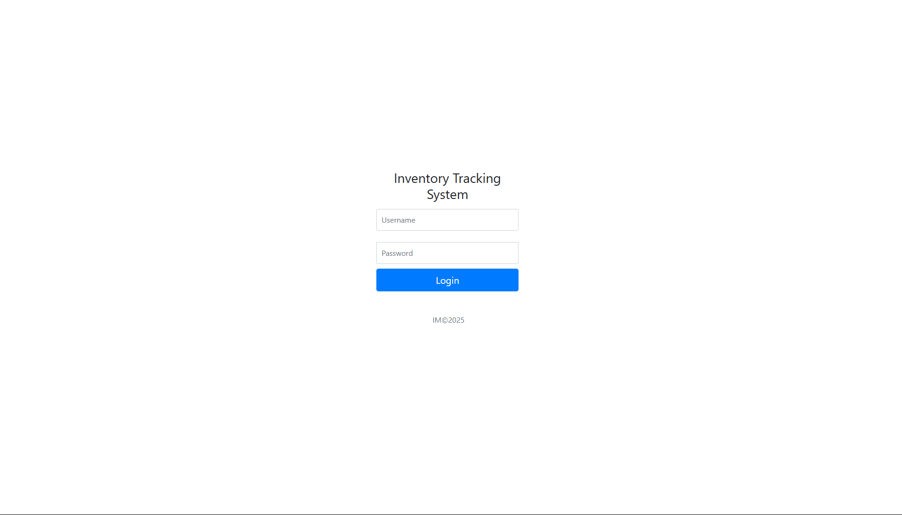
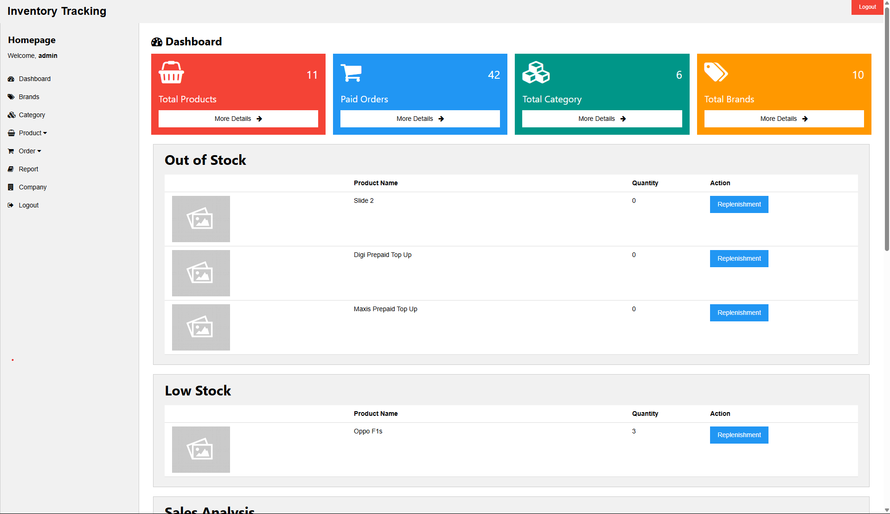
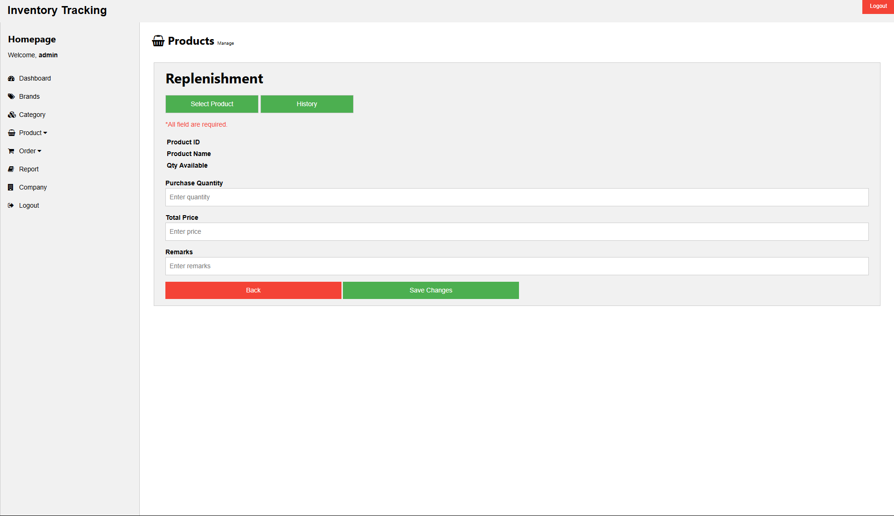
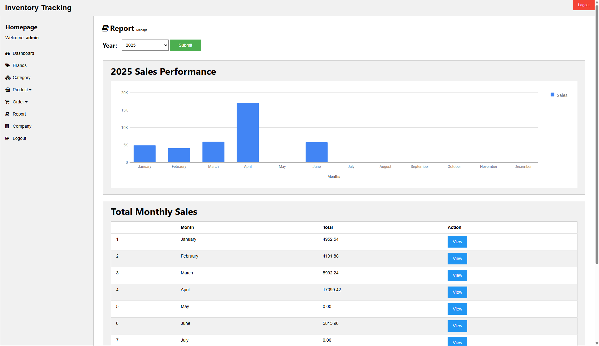

Project Overview
During the creation of the e-commerce Inventory Warehouse Management System I performed design work as the lead team member. of the development team. I enforced the application core by developing its fundamental sections as one of my project responsibilities. I established the logic framework that united presentation elements with operational components. The development process required me to establish complicated APIs for uniting the database with external information sources. data to our application logic. Such integration facilitated inventory monitoring for our team based operations. The company should implement e-commerce platforms which enable the creation of automated stock replenishment workflows. System notifications depended on the team members coordinating their work efforts with each other. Various sprints tracked system components leading to measurable outputs in which all system features were essential parts.
Sprint Objectives Summary
| Sprint | Objective |
|---|---|
| 1 | Minimal Viable Product: Implemented sales trends and inventory turnover dashboards (US: Sales Trends & Inventory Turnover) |
| 2 | Inventory Forecasting and Demand Planning: Identified slow-moving inventory and forecasted stock needs (US: Forecasting & Slow-Moving Stock) |
| 3 | Automated Stock Replenishment: Established automated reorder triggers and procurement notifications (US: Reorder Automation & Notifications) |
| 4 | Real-Time Inventory Tracking and Optimization: Developed real-time tracking dashboard and picking route optimizations (US: Real-Time Tracking & Picking Optimization) |
Summary of User Stories and Tasks
- Inventory Forecasting and Demand Planning: Forecasted future stock needs and identified slow-moving inventory to clear excess stock.
- Real-Time Inventory Tracking: Built real-time tracking for warehouse stock locations and monitored inventory movement across facilities.
- Automated Stock Replenishment: Implemented low-stock detection logic and built a notification system for procurement review and approval.
- Order Fulfillment Optimization: Designed optimized picking routes and tracked order fulfillment times to improve operational efficiency.
- Actionable Reporting and Dashboards: Created dashboards showing sales trends and inventory turnover rates for strategic decision-making.
- Integration with E-commerce Platforms: Integrated Shopify, WooCommerce, and Amazon APIs to sync product inventory automatically.
Additional user stories can be found in the Appendix.
Key Contributions
- Designed and implemented real-time inventory dashboard (Chart.js + ASP.NET backend)
- Integrated Shopify API for product sync (products pulled into local database)
- Developed stock replenishment rule engine based on reorder points
- Built procurement officer notification system via SMTP email triggers
Public GitHub repository: [Repo Link]
Screenshots
   Appendix
Click here for full commit list, user stories, and additional details.